SAFEOT-DUAL · FIGURE STUDIO · 2026.09.25
一个统一核心，清楚的机制层级
本轮重新处理中央主体、模块内部细节和阅读顺序。图1突出同一算法如何连接两端，图2展示求价与策略学习的关系。两组使用同一方法内容，默认展示 B 组，便于比较构图。
本轮是生成视觉候选，尚未制作原生可编辑 PPT。旧版原图与可编辑文件全部保留；论文主文件尚未替换。
图 1 · 统一算法：一个核心连接两端
打开原图 ↗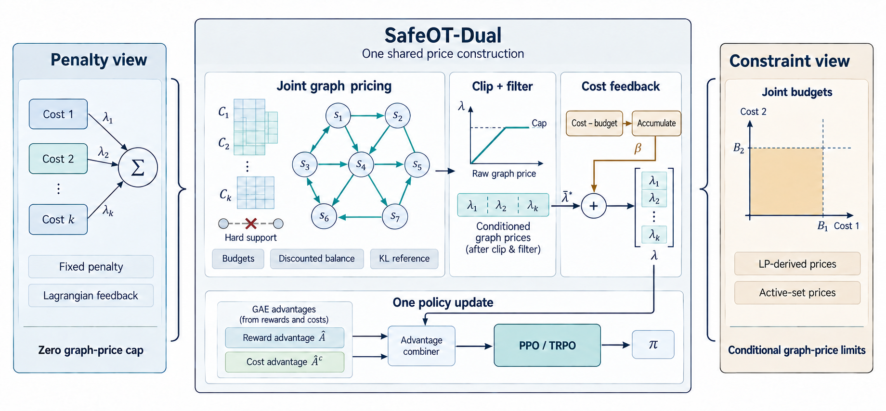
图 2 · 算法框架：从求价到共同策略更新
打开原图 ↗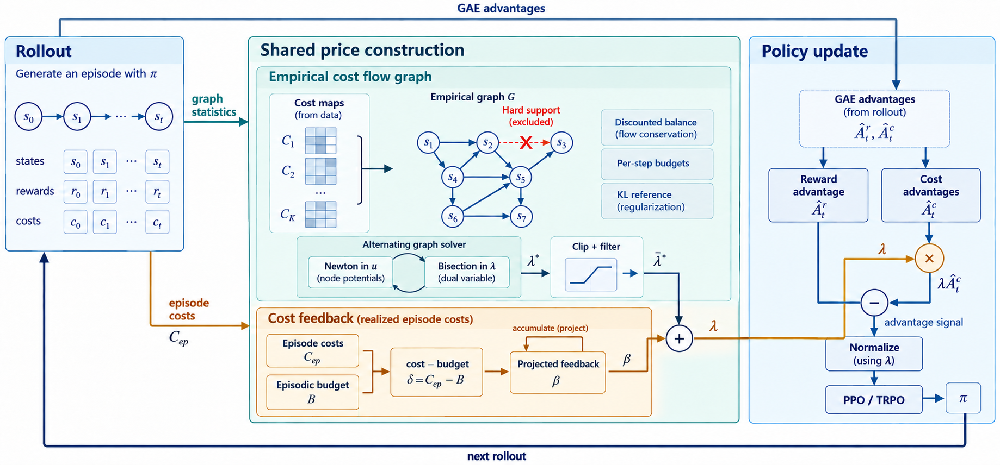
V13 · B组 · 中央主轴 · 双空间
图1由中央价格合成主轴统领两端，图2按图空间与策略空间分层。衬线标题加强层级，保留联合求价与独立 GAE 路线。
图 1 · 统一算法：一个核心连接两端
打开原图 ↗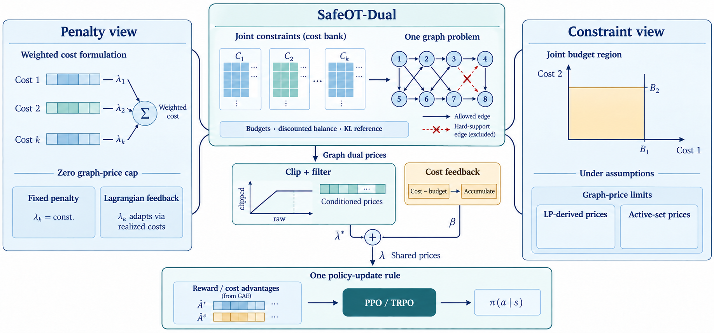
图 2 · 算法框架：从求价到共同策略更新
打开原图 ↗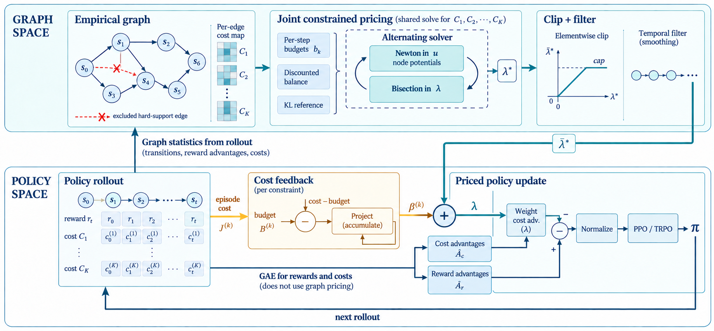
下载与阅读说明
PDF 按 5.5 英寸宽度排放原始图像，可按 100% 比例打印检查。成本矩阵、图结构与小曲线都是机制示意；约束端的极限结论仍以论文假设为前提，图中的硬支持排除不代表策略安全保证。
A组图2仍有一处独立线路交叉未画跨线缺口；B组图2的裁剪到平滑步骤用复合模块表示。选定构图后再精修连线、字体与可编辑对象。
本轮过程稿：保留初稿与修正稿，共 8 张
这些图保留当时状态，含已记录的连线或符号问题，仅用于回看设计过程。上方是第三次生成的候选，全部 12 张原始输出均在过程包中。
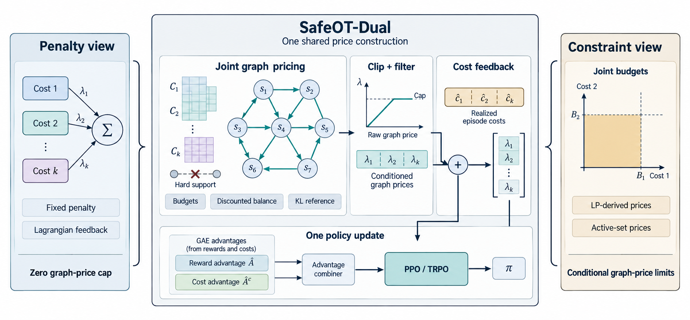
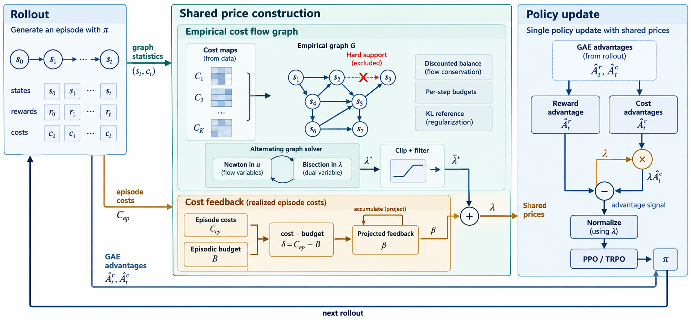
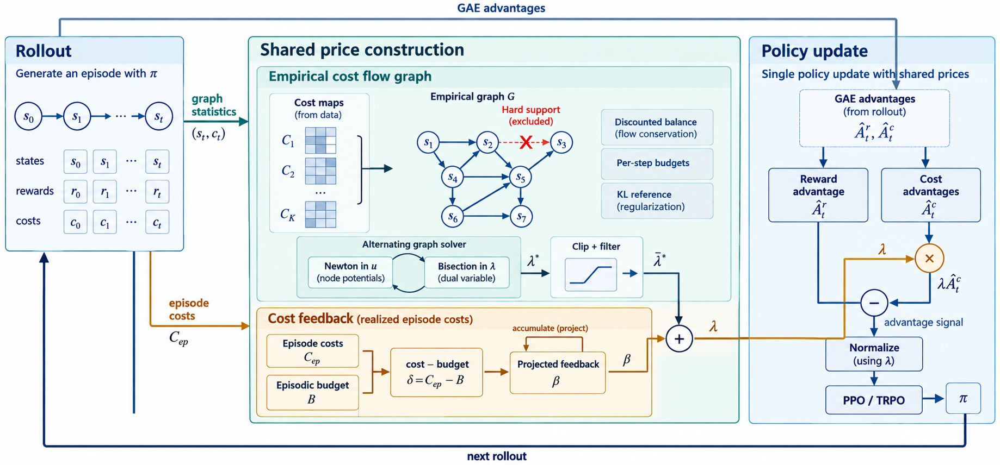
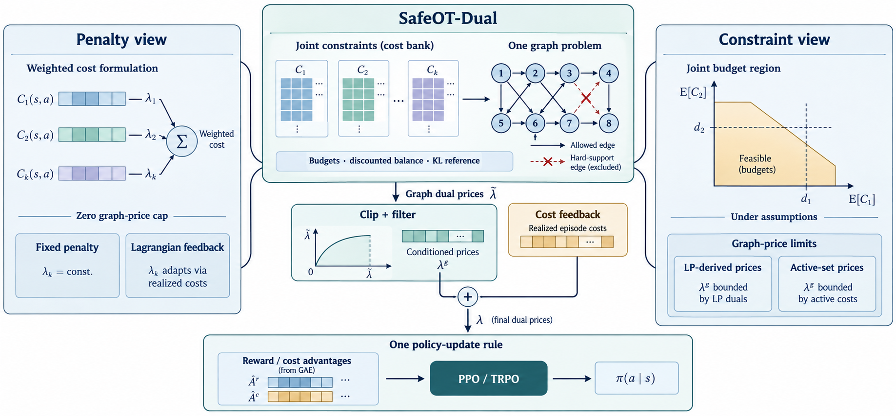
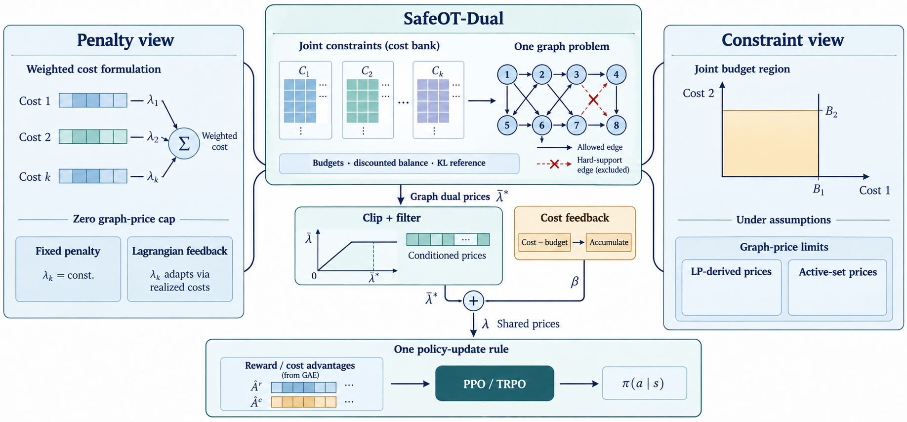
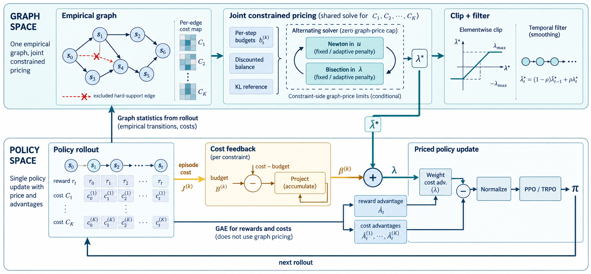
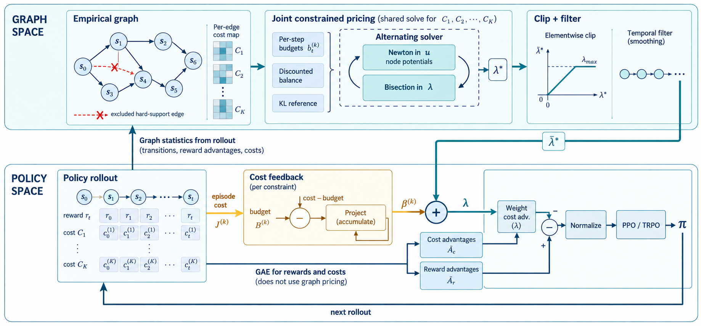